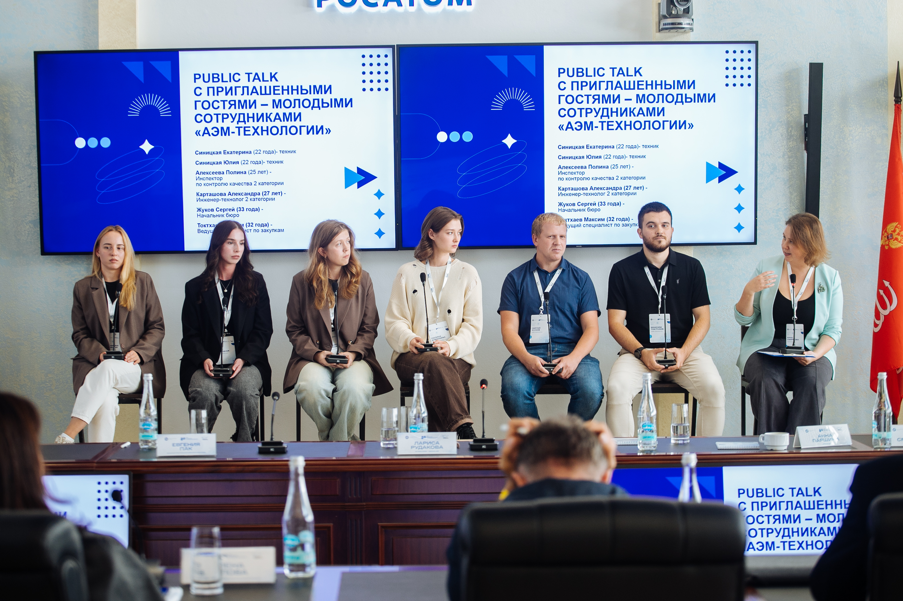
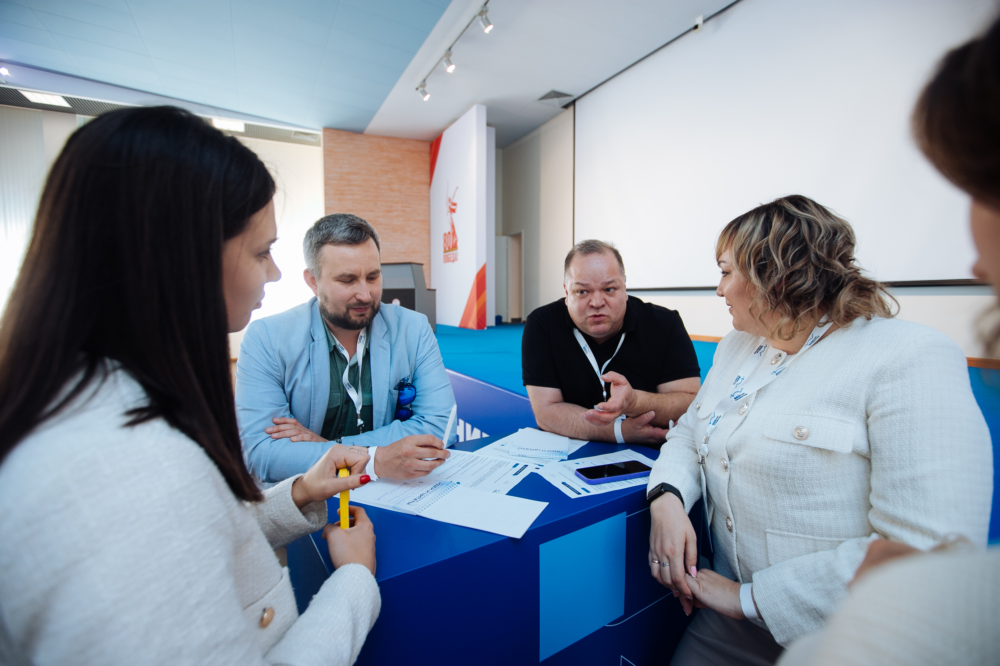

Сверил Вектор развития

Посетил конкурс коммуникационных проектов “Вектор развития” от росатомовского АЭМ-технологии и проф. объединения «InterComm», сообщества специалистов по внутренним коммуникациям, корпоративной культуре и медиа. Событие состоялось еще осенью, но фотки скачал недавно.
На мероприятии собрались люди, ответственные за внутрикорпоративные коммуникации, PR и продвижение HR-бренда крупных федеральных и региональных компаний в сфере обрабатывающей промышленности. Среди участников такие известные гиганты, как Силовые Машины, Полюс Золото, Автоваз, РУСАЛ, Объединенная металлургическая компания и т.д.

Коллеги представили свои проекты в номинациях “визуальная инженерия”, “лучший автор”, “диджитал-эволюция”, “аналитика и экспертность”, “prодвижение”, “бренд работодателя”, “инновации, укрощение ИИ”. Все по своему яркие, оригинальные, и креативные.

Много новых полезных знакомств, инсайдов, которые можно применять в своей работе. Кроме того обсудили, как и на каком языке общаться с поколением Z, чтобы оно не убегало с работы после первого стрессового разговора с начальством.
Одной из активностей программы была задача в командах по 4–7 человек за час придумать, снять и смонтировать короткий ролик на тему “На заводе норм!”. С коллегами из Силовых машин, ПАО “Яковлев” и представителями поколения Z из АЭМ-технологии придумали сюжет про свидания с двумя разными девушками: одна с завода, другая с IT, в котором снялся я сам — посмотрите, он прикольный.
В целом получилось очень полезное, яркое, душевное и осмысленное мероприятие. Спасибо организаторам!
← Назад к новостям